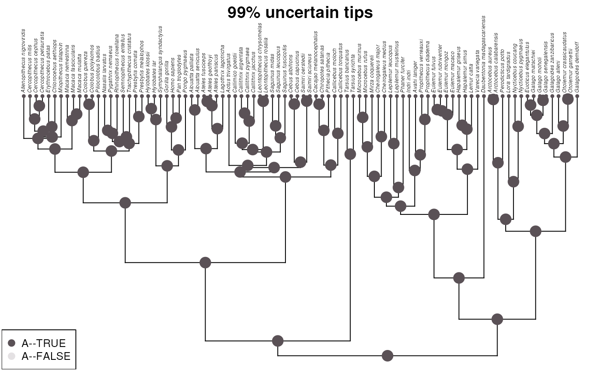
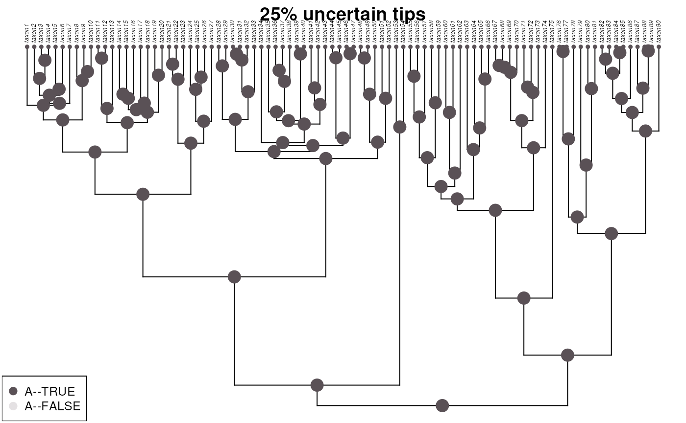
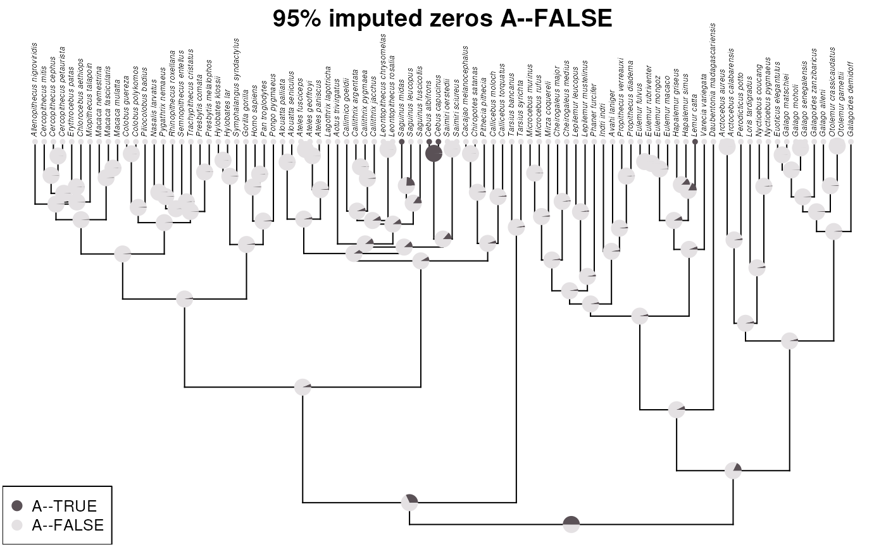
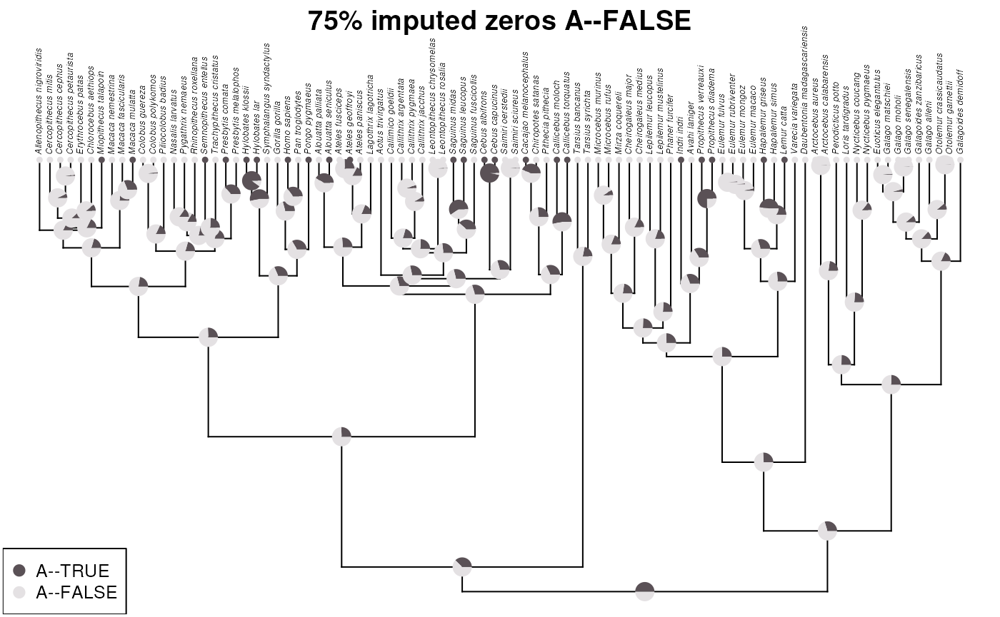

vignettes/articles/uncertainty_binary.Rmd
uncertainty_binary.Rmd
library(ape)
library(phytools)
#> Loading required package: maps
library(dplyr)
#>
#> Attaching package: 'dplyr'
#> The following object is masked from 'package:ape':
#>
#> where
#> The following objects are masked from 'package:stats':
#>
#> filter, lag
#> The following objects are masked from 'package:base':
#>
#> intersect, setdiff, setequal, union
library(tidyr)A few attributes in bugphyzz only have ‘TRUE’ annotations. Other attributes have both ‘TRUE’ and ‘FALSE’ annotations.
Tips that are uncertain could be treated as FALSE annotations (imputed data) or uncertain annotations with prior probabilities set to 0.5 for TRUE and 0.5 for FALSE. In any case, ASR is not very reliable with any of these approaches, especially when the percentage of tips with annotations is low.
data('primate.tree')
data('primate.data')
tree <- primate.tree
data <- primate.data
data <- data[tree$tip.label,]
rownames(data) <- paste0('taxon', 1:nrow(data))
tree$tip.label <- paste0('taxon', 1:Ntip(tree))
original <- data |>
tibble::rownames_to_column(var = 'Taxa') |>
select(Taxa, Activity_pattern) |>
mutate(Presence = 1) |>
pivot_wider(
names_from = 'Activity_pattern', values_from = 'Presence',
values_fill = 0
) |>
arrange(Taxa) |>
tibble::column_to_rownames(var = 'Taxa') |>
select(Diurnal) |>
mutate(
not_diurnal = ifelse(Diurnal == 0, 1, 0)
) |>
as.matrix()
colnames(original) <- c('A--TRUE', 'A--FALSE')
myFun <- function(mat, per_uncertain = 0.1) {
n_row <- nrow(mat)
n <- round(n_row * per_uncertain)
rows <- sample(x = 1:nrow(mat), size = n, replace = FALSE)
mat[rows,] <- rep(1/ncol(mat), ncol(mat))
mat
}
fit <- fitMk(tree = tree, x = original,
model = "ARD", pi = "fitzjohn",
lik.func = "pruning", logscale = TRUE)
ace <- ancr(fit, tips=TRUE)
plot(ace, args.plotTree = list(direction="upwards"))
title(main = '0% uncertain tips', line = -1)
This doesn’t really work when all annotations are positive
In this case, a single annotation overrides all other annotations. 99% of tips are uncertain (0.5 TRUE and 0.5 FALSE).
set.seed(1234)
m99 <- myFun(original, 0.99)
m99 <- m99[tree$tip.label,]
fit99 <- fitMk(tree = tree, x = m99,
model = "ARD", pi = "fitzjohn",
lik.func = "pruning", logscale = TRUE)
ace99 <- ancr(fit99, tips=TRUE)
plot(ace99, args.plotTree = list(direction = "upwards"))
title(main = '99% uncertain tips', line = -1)
set.seed(1234) ## with this seed all values are TRUE that is what I left it here
m95 <- myFun(original, 0.95)
m95 <- m95[tree$tip.label,]
fit95 <- fitMk(tree = tree, x = m95,
model = "ARD", pi = "fitzjohn",
lik.func = "pruning", logscale = TRUE)
ace95 <- ancr(fit95, tips=TRUE)
plot(ace95, args.plotTree = list(direction="upwards"))
title(main = '95% uncertain tips', line = -1)
# set.seed(1234)
# m75 <- myFun(original, 0.75)
# m75 <- m75[tree$tip.label,]
pos1 <- sample(1:nrow(original), round(nrow(original) * 0.75), replace = FALSE)
pos0.5 <- (1:nrow(original))[!1:nrow(original) %in% pos1]
m25 <- original
m25[] <- 0.5
m25[pos1, 1] <- 1
m25[pos1, 2] <- 0
fit25 <- fitMk(tree = tree, x = m25,
model = "ARD", pi = "fitzjohn",
lik.func = "pruning", logscale = TRUE)
m25 <- ancr(fit25, tips=TRUE)
plot(m25, args.plotTree = list(direction = "upwards"))
title(main = '25% uncertain tips', line = -1)
myFun2 <- function(vct, per_ones = 0.1) {
ones <- which(vct == 1)
zeros <- which(vct == 0)
perN <- round(per_ones * length(vct))
if (perN == length(ones)) {
new_vct <- vct
} else if (perN < length(ones)) {
keep_ones <- sample(ones, perN, replace = FALSE)
new_vct <- rep(0, length(vct))
new_vct[keep_ones] <- 1
} else if (perN > length(ones)) {
need_more <- perN - length(ones)
new_ones <- sample(zeros, need_more, replace = FALSE)
new_vct <- vct
new_vct[new_ones] <- 1
}
return(new_vct)
}
x1 <- original
set.seed(12343)
x1[,1] <- myFun2(x1[,1], 0.05)
x1[,2] <- ifelse(x1[,1] == 1, 0, 1)
x1 <- x1[tree$tip.label,]
fit_x1 <- fitMk(tree = tree, x = x1,
model = "ARD", pi = "fitzjohn",
lik.func = "pruning", logscale = TRUE)
ace_x1 <- ancr(fit_x1, tips=TRUE)
plot(ace_x1, args.plotTree = list(direction="upwards"))
title(main = '95% imputed zeros A--FALSE', line = -1)
x2 <- original
set.seed(12343)
x2[,1] <- myFun2(x2[,1], 0.25)
x2[,2] <- ifelse(x2[,1] == 1, 0, 1)
x2 <- x2[tree$tip.label,]
fit_x2 <- fitMk(tree = tree, x = x2,
model = "ARD", pi = "fitzjohn",
lik.func = "pruning", logscale = TRUE)
ace_x2 <- ancr(fit_x2, tips=TRUE)
plot(ace_x2, args.plotTree = list(direction="upwards"))
title(main = '75% imputed zeros A--FALSE', line = -1)
sessioninfo::session_info()
#> ─ Session info ───────────────────────────────────────────────────────────────
#> setting value
#> version R Under development (unstable) (2023-11-22 r85609)
#> os Ubuntu 22.04.3 LTS
#> system x86_64, linux-gnu
#> ui X11
#> language en
#> collate en_US.UTF-8
#> ctype en_US.UTF-8
#> tz Etc/UTC
#> date 2023-12-04
#> pandoc 3.1.1 @ /usr/local/bin/ (via rmarkdown)
#>
#> ─ Packages ───────────────────────────────────────────────────────────────────
#> package * version date (UTC) lib source
#> ape * 5.7-1 2023-03-13 [1] CRAN (R 4.4.0)
#> bslib 0.6.1 2023-11-28 [1] CRAN (R 4.4.0)
#> cachem 1.0.8 2023-05-01 [1] CRAN (R 4.4.0)
#> cli 3.6.1 2023-03-23 [1] CRAN (R 4.4.0)
#> clusterGeneration 1.3.8 2023-08-16 [1] CRAN (R 4.4.0)
#> coda 0.19-4 2020-09-30 [1] CRAN (R 4.4.0)
#> codetools 0.2-19 2023-02-01 [2] CRAN (R 4.4.0)
#> combinat 0.0-8 2012-10-29 [1] CRAN (R 4.4.0)
#> desc 1.4.2 2022-09-08 [1] CRAN (R 4.4.0)
#> digest 0.6.33 2023-07-07 [1] CRAN (R 4.4.0)
#> doParallel 1.0.17 2022-02-07 [1] CRAN (R 4.4.0)
#> dplyr * 1.1.4 2023-11-17 [1] CRAN (R 4.4.0)
#> evaluate 0.23 2023-11-01 [1] CRAN (R 4.4.0)
#> expm 0.999-8 2023-11-29 [1] CRAN (R 4.4.0)
#> fansi 1.0.5 2023-10-08 [1] CRAN (R 4.4.0)
#> fastmap 1.1.1 2023-02-24 [1] CRAN (R 4.4.0)
#> fastmatch 1.1-4 2023-08-18 [1] CRAN (R 4.4.0)
#> foreach 1.5.2 2022-02-02 [1] CRAN (R 4.4.0)
#> fs 1.6.3 2023-07-20 [1] CRAN (R 4.4.0)
#> generics 0.1.3 2022-07-05 [1] CRAN (R 4.4.0)
#> glue 1.6.2 2022-02-24 [1] CRAN (R 4.4.0)
#> highr 0.10 2022-12-22 [1] CRAN (R 4.4.0)
#> htmltools 0.5.7 2023-11-03 [1] CRAN (R 4.4.0)
#> igraph 1.5.1 2023-08-10 [1] CRAN (R 4.4.0)
#> iterators 1.0.14 2022-02-05 [1] CRAN (R 4.4.0)
#> jquerylib 0.1.4 2021-04-26 [1] CRAN (R 4.4.0)
#> jsonlite 1.8.7 2023-06-29 [1] CRAN (R 4.4.0)
#> knitr 1.45 2023-10-30 [1] CRAN (R 4.4.0)
#> lattice 0.22-5 2023-10-24 [2] CRAN (R 4.4.0)
#> lifecycle 1.0.4 2023-11-07 [1] CRAN (R 4.4.0)
#> magrittr 2.0.3 2022-03-30 [1] CRAN (R 4.4.0)
#> maps * 3.4.1.1 2023-11-03 [1] CRAN (R 4.4.0)
#> MASS 7.3-60.1 2023-11-26 [2] local
#> Matrix 1.6-4 2023-11-30 [2] CRAN (R 4.4.0)
#> memoise 2.0.1 2021-11-26 [1] CRAN (R 4.4.0)
#> mnormt 2.1.1 2022-09-26 [1] CRAN (R 4.4.0)
#> nlme 3.1-164 2023-11-27 [2] CRAN (R 4.4.0)
#> numDeriv 2016.8-1.1 2019-06-06 [1] CRAN (R 4.4.0)
#> optimParallel 1.0-2 2021-02-11 [1] CRAN (R 4.4.0)
#> phangorn 2.11.1 2023-01-23 [1] CRAN (R 4.4.0)
#> phytools * 2.0-3 2023-11-09 [1] CRAN (R 4.4.0)
#> pillar 1.9.0 2023-03-22 [1] CRAN (R 4.4.0)
#> pkgconfig 2.0.3 2019-09-22 [1] CRAN (R 4.4.0)
#> pkgdown 2.0.7 2022-12-14 [1] CRAN (R 4.4.0)
#> purrr 1.0.2 2023-08-10 [1] CRAN (R 4.4.0)
#> quadprog 1.5-8 2019-11-20 [1] CRAN (R 4.4.0)
#> R6 2.5.1 2021-08-19 [1] CRAN (R 4.4.0)
#> ragg 1.2.6 2023-10-10 [1] CRAN (R 4.4.0)
#> Rcpp 1.0.11 2023-07-06 [1] CRAN (R 4.4.0)
#> rlang 1.1.2 2023-11-04 [1] CRAN (R 4.4.0)
#> rmarkdown 2.25 2023-09-18 [1] CRAN (R 4.4.0)
#> rprojroot 2.0.4 2023-11-05 [1] CRAN (R 4.4.0)
#> sass 0.4.7 2023-07-15 [1] CRAN (R 4.4.0)
#> scatterplot3d 0.3-44 2023-05-05 [1] CRAN (R 4.4.0)
#> sessioninfo 1.2.2 2021-12-06 [1] CRAN (R 4.4.0)
#> stringi 1.8.2 2023-11-23 [1] CRAN (R 4.4.0)
#> stringr 1.5.1 2023-11-14 [1] CRAN (R 4.4.0)
#> systemfonts 1.0.5 2023-10-09 [1] CRAN (R 4.4.0)
#> textshaping 0.3.7 2023-10-09 [1] CRAN (R 4.4.0)
#> tibble 3.2.1 2023-03-20 [1] CRAN (R 4.4.0)
#> tidyr * 1.3.0 2023-01-24 [1] CRAN (R 4.4.0)
#> tidyselect 1.2.0 2022-10-10 [1] CRAN (R 4.4.0)
#> utf8 1.2.4 2023-10-22 [1] CRAN (R 4.4.0)
#> vctrs 0.6.5 2023-12-01 [1] CRAN (R 4.4.0)
#> withr 2.5.2 2023-10-30 [1] CRAN (R 4.4.0)
#> xfun 0.41 2023-11-01 [1] CRAN (R 4.4.0)
#> yaml 2.3.7 2023-01-23 [1] CRAN (R 4.4.0)
#>
#> [1] /usr/local/lib/R/site-library
#> [2] /usr/local/lib/R/library
#>
#> ──────────────────────────────────────────────────────────────────────────────